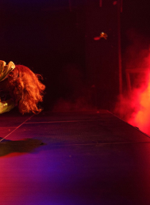
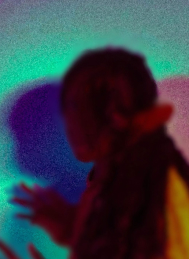

WHAT'S ON

Thu 12 Oct 2023
DESIRE MAREA
(South Africa)

Thu 19 Oct 2023
PUMPITOPERA TRANSATLANTICA
(Brazil)
"TRANSFORM HAS CHANGED THE WAY AUDIENCES EXPERIENCE LEEDS"
THE GUARDIAN
WHAT'S NEW

ONE MONTH TO GO
— With one month to go until Transform 23, we’re today announcing a series of new commissions, DJ sets and immersive encounters to deepen your experience of the festival.

IF WALLS COULD TALK
— Opening the festival alongside Ásrún Magnúsdóttir’s SECRETS, Transform’s Young Curators present IF WALLS COULD TALK.
OPPORTUNITIES
STTOBOSCO: WORKSHOP CALL OUT
VOLUNTEER CALL OUT
JOIN THE DISTORTED RAOP CHOIR